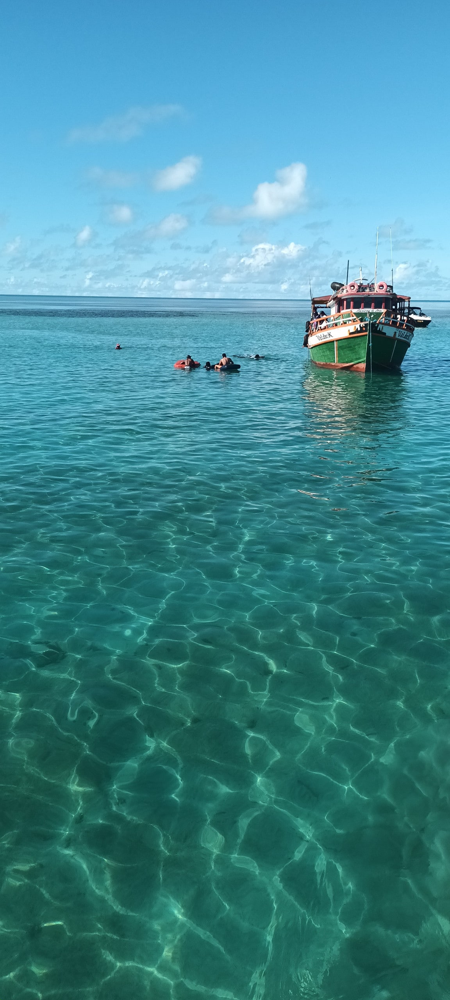
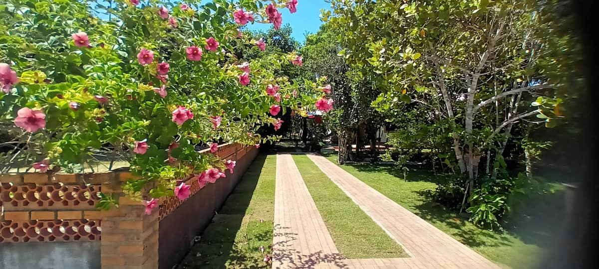

Praia de Guaratiba
O mar por perto.
O cenário da hospedagem e do Empório DaTerra.

Entre o mar e o verde, Praia de Guaratiba é um refúgio no litoral de Prado, no extremo sul da Bahia.
Guaratiba fica no município de Prado, em uma faixa do litoral baiano marcada por praia, vegetação e dias que convidam a desacelerar.
A região tem espaços para caminhar, desfrutar do mar e conhecer os arredores. Prado e Alcobaça são referências próximas para quem deseja explorar mais do extremo sul da Bahia.
Condições do mar e de acesso a passeios variam. Consulte fornecedores locais e fontes oficiais antes de organizar seu roteiro.
Três referências para orientar a viagem, sem distâncias ou tempos de deslocamento inventados.
O cenário da hospedagem e do Empório DaTerra.

A cidade que abriga Guaratiba e oferece outros trechos de costa para descobrir.

Outra referência para quem deseja conhecer a região com calma.